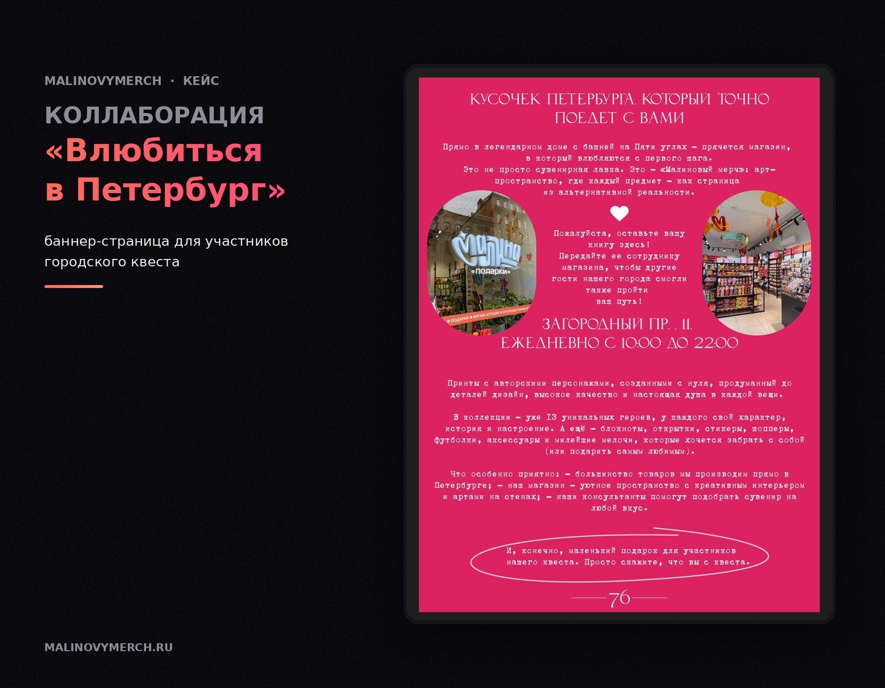
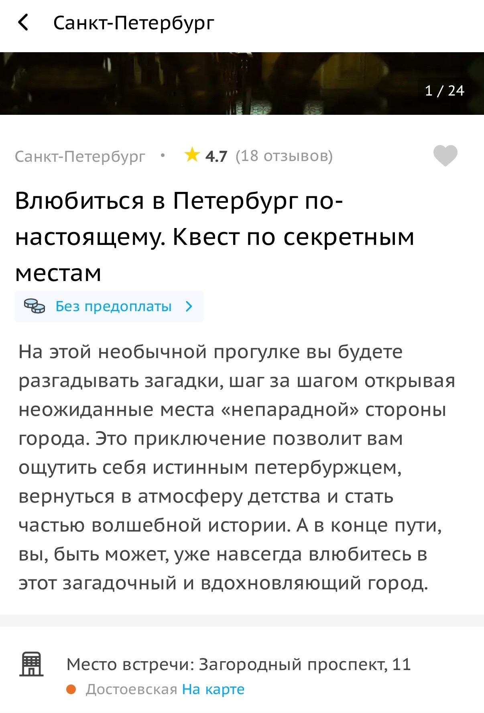

Нужно было привлекать туристическую аудиторию в магазины без зависимости только от платной рекламы.
Нашла пересечение между туристическим потоком, локальным брендом и продуктами с петербургской тематикой. Инициировала партнёрство с туристическими гидами:

